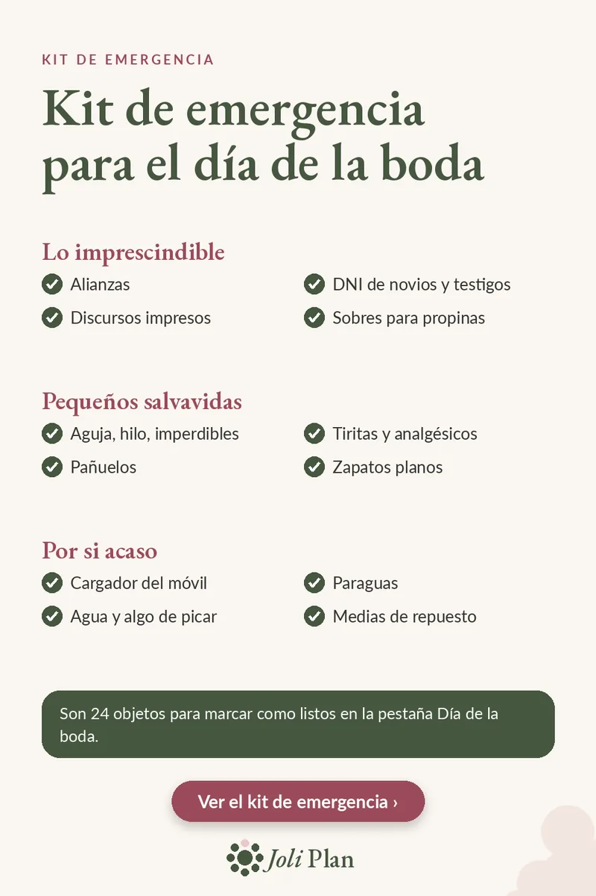

El día de la boda
Kit de emergencia para boda: la lista para marcar
Actualizado el 25/10/2026
El día de la boda casi siempre pasa algo pequeño: un botón, un tacón, una batería vacía. Un kit de emergencia preparado con tiempo ayuda con la mayoría de estos imprevistos.
Ver el planificador de boda en Etsy ›

Lo imprescindible
- Alianzas
- DNI de novios y testigos
- Discursos impresos
- Sobres para propinas
Pequeños salvavidas
- Aguja, hilo, imperdibles
- Tiritas y analgésicos
- Pañuelos
- Zapatos planos
Por si acaso
- Cargador del móvil
- Paraguas
- Agua y algo de picar
- Medias de repuesto
Quién lleva el kit
Dadle el kit a una persona que esté cerca de vosotros todo el día, por ejemplo un testigo. Así no tenéis que pensar en nada.
Escribid un nombre en cada sobre para que no se confundan. Esta lista recoge lo esencial: añadid lo que necesitéis personalmente, como medicación.